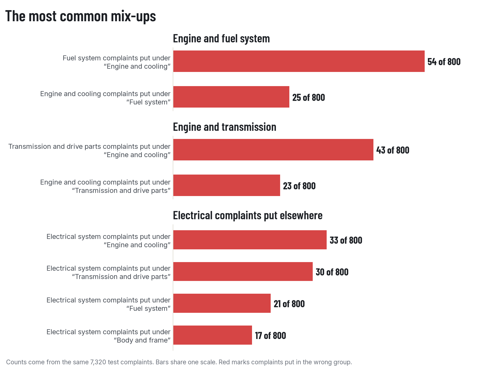

How well the computer sorted new complaints
We set out to learn whether the words an owner writes can tell us which part of the car failed. To find out, we tested three computer methods on 7,320 complaints received from May to October 2026. None of those complaints had been seen by the methods before, and all of them arrived after the complaints the methods learned from. The best method put 89 of every 100 of these complaints in the right one of ten groups. The other two methods got 87 and 87 right out of every 100. Careful checks show that the best method's lead over the other two is too large to be chance. The gap between the other two is small, and we cannot say one is better than the other. Some groups were easy and some were hard. Air bags and steering complaints were the easiest, with 96 of every 100 sorted correctly. Electrical system complaints were the hardest, at 82 of every 100, with fuel system level at 82.

Why some problems are harder
The words that most clearly mark the easy groups are the part names themselves, such as "air bag" and "steering wheel". A complaint that says the air bags did not open leaves little doubt about where to file it. The hard groups are the ones where a symptom can have several causes. A car that stalls on the highway can have an engine problem, a fuel problem or an electrical problem, and the owner often cannot tell which. Our results show the same thing. Of 800 fuel system complaints, 52 were put under the engine. Of 800 transmission complaints, 40 were put under the engine as well. Electrical complaints were spread across several other groups, with 22 of 800 going to the engine and 35 going to the transmission. These mistakes happen between groups whose problems can look alike in the owner's words. Reading the words alone works well for some problems and only fairly well for others.

Limits of what we found
Some complaints are hard for any reader. Of the 7,320 test complaints, 513 (7.0 percent) were sorted wrongly by all three methods. One complaint describes a door sensor that fails now and then, and the car then brakes hard by itself at low speed. NHTSA filed it under the electrical system, and all three sorted it as a collision-avoidance problem. Both answers are easy to defend, so the mistake says as much about the groups as about the computer. The groups themselves were chosen by NHTSA, and no independent check tells us they are always right. We also left out the 128,014 complaints (30 percent of the file) that NHTSA filed under more than one group, so our results say nothing about those. We used ten groups of parts and balanced them so each group had a similar number of complaints, which is not how complaints arrive in real life. Our test covers one six-month window, from May to October 2026. When we tested on a random mix of complaints instead of newer ones, the scores were between 1.0 and 1.3 points higher out of 100, so looking ahead in time costs only a little.
What this could be used for
What does this mean for sorting real complaints? A computer can read an owner's words and name the failing part about 89 times out of 100 in our test. That is good enough to help a person sort a large pile of complaints into rough piles. It is not good enough to replace the person, especially for groups like the electrical system where about one in five is misfiled. The mistakes it makes are mostly between neighboring groups, such as the engine and the fuel system. A fair next step would be to let the computer sort first and have a person check the groups where mix-ups are common. Another would be to let it handle the complaints that list more than one part, which we skipped. We have shown that the owner's own words carry most of the answer. We have not shown that the methods would work on complaints from a much later year or from another country. People who want to report a problem with their own vehicle can do so on NHTSA's reporting page.
Technical details: the numbers behind these statements
- Test set: complaints received 1 May to 31 October 2026, 7,320 complaints with at most 800 per group. Each method was scored once with its best checkpoint on a separate validation set.
- Scores on that set (accuracy, macro-F1): DistilBERT 0.8943 and 0.8945; MLP 0.8738 and 0.8739; BiLSTM 0.8684 and 0.8689.
- DistilBERT against the other two: McNemar p-values 7e-11 (MLP) and 3e-17 (BiLSTM); the 95% bootstrap intervals of the differences exclude zero. MLP against BiLSTM: p = 0.107, which is not significant, with or without a correction for three comparisons.
- Wrong for all three methods: 513 of 7,320 test complaints.
- Random split instead of a time-based split: accuracy 1.03, 1.28 and 1.03 points higher for the MLP, BiLSTM and DistilBERT.
- Full tables, intervals, confusion matrices and error examples are on the Results page.